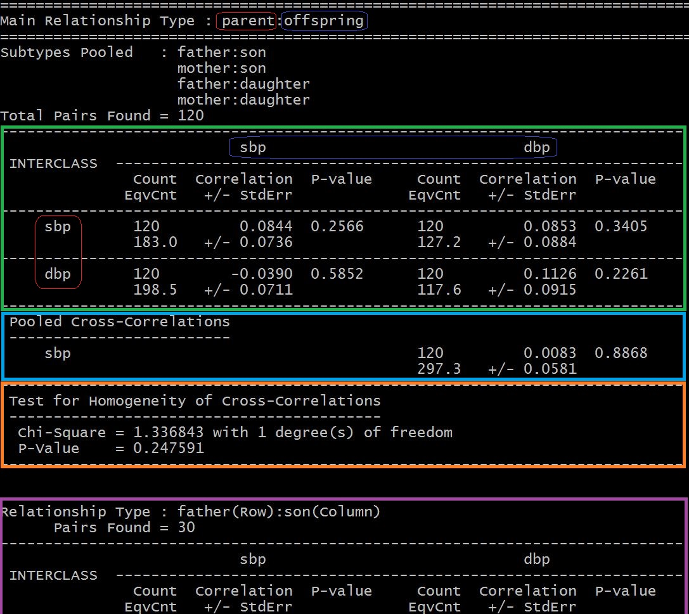
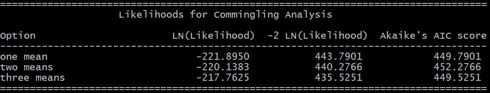

Trait analysis is the first step in any genetic analysis to establish the causal relationship between genetic variants and a trait of interest. This includes studies of familial aggregation (correlation), narrow-sense heritability estimation, and segregation analysis.
Familial Aggregation (Correlation)¶
Familial aggregation studies determine whether a disease of interest is observed in families more than would be expected by chance alone. The FCOR module in ONETOOL calculates multivariate familial correlations with their asymptotic standard errors.
$ onetool --fam test_miss00.fam --fcor
$ onetool --fam test_miss00.fam --pheno test_miss0_phen.txt --pname sbp --fcor
The output file is a text file containing tables of correlations, their standard errors, used pair counts and equivalent pair counts for each pair of traits for each subtype and/or main type of relative up to 2nd generation.
{kind=link}
The header containes the information on main relation type (parent:offspring) with subtypes pooled and total pairs count. The following blocks contain:
- main result table for parent:offspring type
- row (rounded box in red) - trait(s) for parent
- column (rounded box in blue) - trait(s) for offspring
- correlations, their standard errors and P-values
- used pair counts and equivalent pair counts
- pooled cross-correlations of interclass relative types
- homogeneity test result when there are more than 1 trait
- followed by the main result tables for each subtypes pooled
Note
The colored-blocks and boxes are added to show the different parts of tables in the example output above.
Segregation analysis¶
The SEGREG module fits and tests Mendelian segregation models in the presence of residual familial correlations.
$ onetool --fam test_miss00.fam --segreg
$ onetool --fam test_miss00.fam --pheno test_miss0_phen.txt --pname sbp --segreg
It generates 3 output files:
- Summary output file (.segreg.sum) - contains the table of final estimates of the parameters and their standard errors, and other results.
- Detailed output file (.segreg.det) - contains the table of final estimates and variance-covariance matrix of the parameter estimates.
- Trait genotype probability and penetrance function output file (.segreg.typ) - contains the individual specific type probabilities conditional on the model and all the pedigree information available, and individual specific penetrance information which is an input file into model-based linkage module (--lodlink --typ onetool.segreg.typ).
At the end of the detailed output contains the likelihood comparison table from comingling analysis (by default).
{kind=link}
Heritability Estimation¶
Heritability estimation can be done using different relatedness options:
- traditional pedigree-based kinship matrix (--kinship)
- identity-by-state (IBS) matrix using genome-wide variant data (--ibs)
- genomic relationship matrix (GRM) using genome-wide variant data (default)
$ onetool --fam test_miss00.fam --heritability --kinship
$ onetool --fam test_miss00.fam --vcf test_miss0.vcf --heritability --ibs
$ onetool --fam test_miss00.fam --vcf test_miss0.vcf --heritability
Note
Kinship matrix (--kinship) is pedigree-based, i.e., no variant data are used. IBS matrix (--ibs) and GRM matrix are estimated from the given variant data.